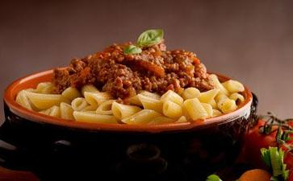

1、因为吃肉就是谋杀我们知道汉堡包和鸡翅膀不是长在树上的。它们来自被我们判处死刑的，甚至早在他们出生前就被判了死刑的动物。
凡吃动物产品的人都应对这些动物生命的滥用和死亡负责，动物有他们自己的
那些被食用的动物已记不得绿色的牧场，新鲜的空气和阳光，它们出生不久就被迫离开自己的妈妈，数千只动物被一起挤在工厂化的农场中，有时后它们都无法移动或在任何的方向走一步。他们的生命是如此的短暂而悲惨。
为提高饲养鸡的肉产量，他们让鸡长得那么大、那么快，以至于它们的腿都被自身的重量压垮了。因此，鸡遭受了关节和骨骼的疼痛和心脏病。它们不能动弹，一些鸡干渴而死，只因为离它们的饮用水有几步之路。
为提高鸡蛋的产量，鸡笼被高高地堆迭起来，鸡的粪便从上面掉落到下面笼子里的鸡身上。雄性的小鸡因对蛋业无价值，他们就被扔到垃圾桶或扔进绞肉机（如果他们还活着），然后再喂给其他养殖动物，甚至其他鸡只吃。
因为那些饲养的食用动物是如此的紧张和恐惧，工厂的农民们认为只有通过致残它们才能防止他们的对抗。他们用烧红的刀刃把鸡的喙嘴割去，而猪的牙齿和尾巴的去除都不使用止痛药的。在杀戮的场地上，许多动物被剥皮和切块时还都是有
我们也不要忘了鱼。无论他们被钩住口腔拉上来的，在鱼网内从海洋中拖出来的，或是人工养殖的鱼，鱼和其它海洋动物也都会感到
这不仅仅是由于饱和脂肪和胆固醇。首先，人类没有被设计为吃动物产品的，即使是它们的最自然的，未加工的形式。而且由于现代的农场饲养方式，每吃一口肉、蛋、乳制品，随之一起进入体内的是：
抗生素和类固醇：在工厂化农场里都给动物吃这些药物，以防止在拥挤，不卫生的条件下爆发疾病，要使他们能在那里生活并长得更快。
粪便：当动物尸体被“清洗”时，会刺破动物的肠道，从而使肉被粪便污染。（在绞牛肉时，一个动物的排泄物将与其他的动物混杂在一起。） 喂养动物的饲料实际是是谷物，排泄物、其他动物的尸体、过期的狗粮、猫粮以及餐厅吃剩的食物的混合体。
脓，血，痂：一天多到三次，用电动挤奶机接到它们肿胀的乳房上，导致了伤口和感染，这些物质最后也一起进入了牛奶之中。
毒素：生活在水中的鱼类吸收和摄取在水中的任何东西，当我们吃的时侯，这些物质就传递给我们了。所以不管我们喝的水有多干净，当我们吃鱼时还是会得到汞，多氯联苯（PCBs）以及其它的毒素。
病原体：很多细菌是无害的，甚至是有益的。例如，只有细菌才能合成维生素B12。但某些细菌菌株会造成危险，甚至致命的疾病。大肠杆菌0157:H7型中毒，被称为“汉堡包疾病”，在鸡和火鸡上可发现弯曲杆菌，而
如果心脏病、癌症和其它疾病不会说服你不要吃动物产品，但可能肉类的生产已对环境造成了危害。
首先，饲养食用动物消耗我们的氧气供应。在中美洲，三分之二的雨林已经被砍伐，用作畜牧场。同时，世界上的牲畜产生的甲烷为全球甲烷总排放量的15到25%，而甲烷的温室气体效应比二氧化碳要高24倍多。
在美国，近一半国家的水，超过三分之一的原材料和燃料，80%的农业的土地，以及有70%的粮食被用来饲养食用动物。反过来，每秒钟产生了8.7万磅的肥料！这些废物是整个人类排泄物的130倍。它们将漏到溪流与河川之中，污染水源。
4、因为吃肉是不公平的人类的痛苦和其他动物的痛苦是相互关联的。通过减少其他动物的痛苦，也有助于减轻我们人类的痛苦。
例如，每一天约有8.4亿人口过着挨饿的生活。全世界牲畜消耗的能量足以供养87亿人。谷物可以用来让饥饿的人有饭吃，而不是用来养肥那些食用动物。我们为什么不直接种植谷物供人类所需，而是种谷物，喂养动物，杀死动物，然后吃他们的肉？简单地说，你吃的肉越多，能给他人吃的就越少。供20位
通过抵制动物产品，我们也抵制了屠宰场和动物加工厂，这些是臭名昭著的低工资，工作条件不安全和劳动关系恶劣的工作场所。
例如美国养殖动物行业，故意招募移民，未成年人，贫困的农村美国人，因为他们会接受低工资，会因害怕会失去工作而容易地被操纵。一些肉类加工巨头甚至走私无证非法人员进入美国，他们远离家乡，得不到任何的支持，很多外来工人被当作养殖畜牧业的奴隶对待。在美国的一些屠宰场，有三分之二的工人是不会讲英语的移民。
日复一日，这些工人必须奋力对抗动物的挣扎，保护自己的性命、使用危险的设备来分开肉和骨头。培训时有时看一点有关的录像，某些屠宰场工作人员周转率高达400%，这意味着要经常更换那些熟悉操作机器，没有意外伤害自己或他人的工人。
通常，这些工人非常担心他们的工作配额或要跟上流水线的速度，他们也考虑采取额外的一些预防措施，最简单的方法，如保持他们的刀子锋利。至于安全装备、动物加工行业通常要求工人自掏腰包，付钱来买，尽管事实上，很多工人太穷了，甚至不能养家糊口。因此毫不奇怪，每年要有三分之一的屠宰场工人患病或受伤，其他制造业的工作为1/10。 屠宰场工人的重复性压力伤害为任何其他制造行业的35倍以上。
我们已经听到了如此糟糕的情况，事实上，这些数字甚至有可能更高：工人，人力资源职员，和管理部门被劝阻有关工伤的报告，以获取高额奖金和保持保险费用减少到公司的底线。许多生病及受伤的员工需要报告，但他们被迫假装是在家里受的伤，甚至直接被解雇掉，这样公司就不必支付医疗费或不需将受伤的情况报告至职业安全局。
养殖畜牧业除了剥削穷人，移民和儿童外，没有采取什么措施保护危险场地工作的工人，他们也被指控破坏工会。当工人试图组织工会，行业就使用非法恐吓和骚扰的诡计，使亲工会的工人保持沉默。据人权组织观察“许多试图组建工会和集合起来协商的工人受到监视，骚扰，施压，威胁，停职，解雇，驱逐或以其它的方式来损害他们结社自由的权利。”